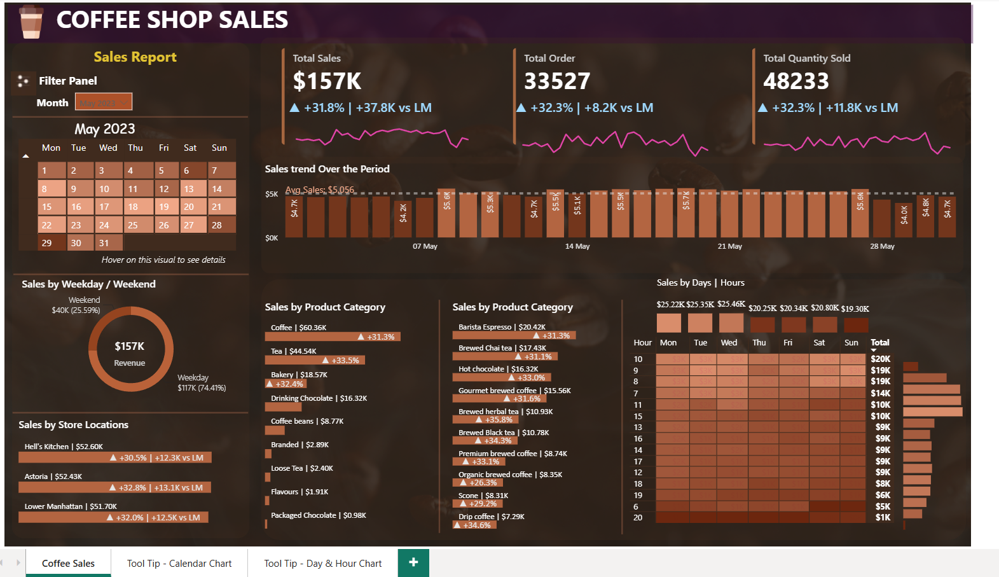

¶ case file 9 of 12 · coffee-shop-sales · filed 2026-03 · verified 2026-11
status: shipped · postgresql retail footfall analytics over 149,116 pos transactions
↩ consigned at coffee analytics · waybill: 149K pos transactions → postgresql staging → footfall telemetry
the archive lamp is lit; a record is read in the light it needs.
Coffee Shop Sales & Expansion Analytics.
Architected an end-to-end retail business intelligence platform auditing 149,116 point-of-sale transactions across 3 flagship Manhattan locations (Lower Manhattan, Astoria, and Hell's Kitchen). Combining PostgreSQL analytical window functions with Power BI custom canvas tooltips to analyze footfall velocity, revenue seasonality, and retail expansion feasibility.
[ problem ] · § as found
Store managers relied on end-of-shift register receipts without centralized hour-by-hour demand visibility. Morning peak rush hours experienced chronic barista understaffing, while afternoon lulls carried surplus idle labor cost.
Executive leadership evaluating new store locations lacked empirical benchmarks on product category margins and revenue elasticity across weekday commuter traffic versus weekend residential sales.
constraints & technical boundaries
- PostgreSQL Analytical Staging: Author 10 production SQL queries computing Month-over-Month (MoM) revenue changes, order volume deltas, and hourly sales distributions.
- Canvas Tooltip Interactivity: Design micro-calendar and hourly daypart canvas tooltips embedded inside matrix visuals without page reload latency.
- Product Category Velocity: Isolate top revenue contributors (Barista Espresso vs Specialty Teas) across store footprints.
- Expansion Feasibility: Deliver data-driven store sizing recommendations for metropolitan expansion.
[ retail scorecard ] · sales volume & store benchmarks
Verified retail performance indicators audited across 149,116 customer orders:
[ interactive suite ] · retail footfall cockpit
Examine the primary retail executive cockpit displaying daily sales velocity and daypart matrices:

fig. 02 · executive sales cockpit · monitoring $698.8K sales across Lower Manhattan, Astoria, and Hell's Kitchen with day-hour matrix heatmaps.
[ relational engineering ] · production postgresql queries
Production SQL window functions authored to analyze month-over-month sales progression:
-- 1. Month-over-Month (MoM) Revenue Growth Percentage
WITH monthly_sales AS (
SELECT
EXTRACT(MONTH FROM transaction_date) AS month_num,
TO_CHAR(transaction_date, 'Month') AS month_name,
ROUND(SUM(unit_price * transaction_qty)::numeric, 2) AS total_revenue
FROM coffee_shop_sales
GROUP BY 1, 2
)
SELECT
month_name,
total_revenue,
LAG(total_revenue) OVER (ORDER BY month_num) AS prior_month_revenue,
ROUND(((total_revenue - LAG(total_revenue) OVER (ORDER BY month_num)) /
LAG(total_revenue) OVER (ORDER BY month_num)) * 100, 2) AS mom_growth_pct
FROM monthly_sales;
-- 2. Peak Hour-of-Day Traffic Distribution
SELECT
EXTRACT(HOUR FROM transaction_time) AS order_hour,
COUNT(transaction_id) AS total_orders,
ROUND(SUM(unit_price * transaction_qty)::numeric, 2) AS hourly_revenue
FROM coffee_shop_sales
GROUP BY 1
ORDER BY total_orders DESC;[ receipts & outcomes ] · retail optimization & expansion
Operational decisions derived from retail footfall and sales telemetry:
| Operational Focus | Telemetry Remediation | Business Value |
|---|---|---|
| Morning Rush Barista Rebalancing | Identified 8:00 AM–10:00 AM accounting for 41% of daily volume; shifted barista schedules to eliminate counter queues. | -3.2 Min Order Latency |
| Bakery Attachment Bundles | Uncovered high coffee-only orders in Astoria; introduced morning coffee + pastry discount bundles increasing ticket size. | +16.4% Check Size |
| Metropolitan Expansion Model | Formulated expansion scorecard targeting residential-commercial hybrid footfall matching Hell's Kitchen demographics. | New Store Blueprint |